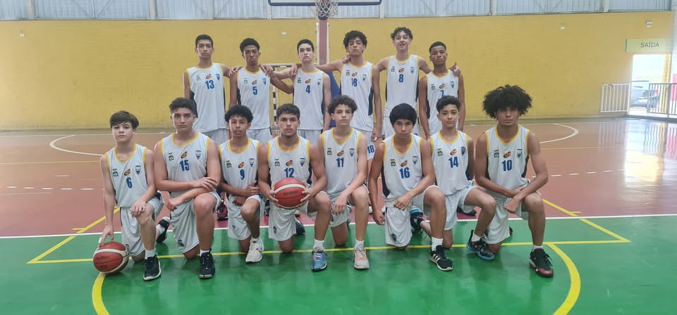
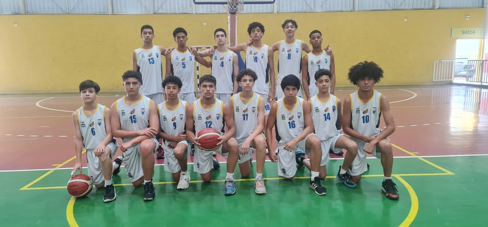

As escolinhas de basquete em Barueri têm um papel fundamental nesse processo. Elas oferecem um espaço seguro e acolhedor onde os jovens podem aprender os fundamentos do esporte, desenvolver suas habilidades e, mais importante, criar amizades e aprender a trabalhar em equipe.
treinamento é voltado para todas as idades e níveis de habilidade, garantindo que cada atleta tenha a chance de crescer e se destacar. Um dos destaques desse trabalho é o Campeonato CBB – Campeonato Barueri de Basquete. Essa competição foi criada especialmente para os alunos das escolinhas, promovendo um ambiente saudável de competição entre os diferentes polos da cidade.
Com isso, os atletas não só têm a oportunidade de aplicar o que aprenderam em um contexto competitivo, mas também de se inspirar uns aos outros, criando um espírito de comunidade e camaradagem.
Estamos muito animados com o potencial desses jovens atletas e com as possibilidades que o basquete pode oferecer a cada um deles. Através do Campeonato CBB e das escolinhas, continuamos a nossa missão de Reerguer o Basquete de Barueri.
 
